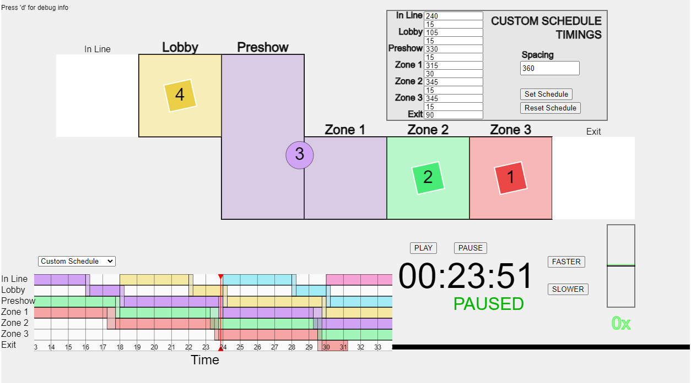

Provides on-rails simulation of a number of groups passing through a technical space with 5 rooms, plus and entry and exit.

schedulesim.html in a web browser by double-clicking it, or from your browser's File menu select Open.The controls are:
The central part of the simulation represents the 5 main rooms of the experience (Lobby, Preshow, Zone 1, Zone 2, and Zone 3), plus an additional 'space' before the start and after the end to allow visualizing guests entering/existing the experience. Groups are color-coded for easy cross-referencing with the graph below.
When groups are active in a space, they are represented with a rotating diamond shape. While groups are transitioning, they are represented by a dimmed circle.
Each room is filled with the color of the group that is currently either occupying it or transitioning in/out of it.
The clock in the lower right displays the relative runtime of the exhibit. The Play and Pause buttons start and stop the simulation. The Faster and Slower buttons increase and decrease the run speed, including the ability to reverse the flow of time.
The graph in the bottom-left shows the location of each group as it moves through the 7 key spaces in the exhibit (5 rooms, plus before-entering and after-leaving). When a group is transitioning between spaces, it is shown as occupying both, to avoid groups colliding with or being able to see each other.
Click and
The selector above the schedule display allows the user to select the current schedule. Changing the schedule will reset the simulation time to 00:00.
The schedules are:
When the 'custom schedule' is selected, an additional menu appears in the top-right of the screen, allowing the user to adjust the timings and transitions between each room. All timings are in seconds.
The timings listed default to the values in the 100% DD schedule. After changing the timing values, pressing Set Schedule will push the new timing values into the simulation. Pressing Reset Schedule will reset all values to match the 100% DD schedule, and push them into the simulation.